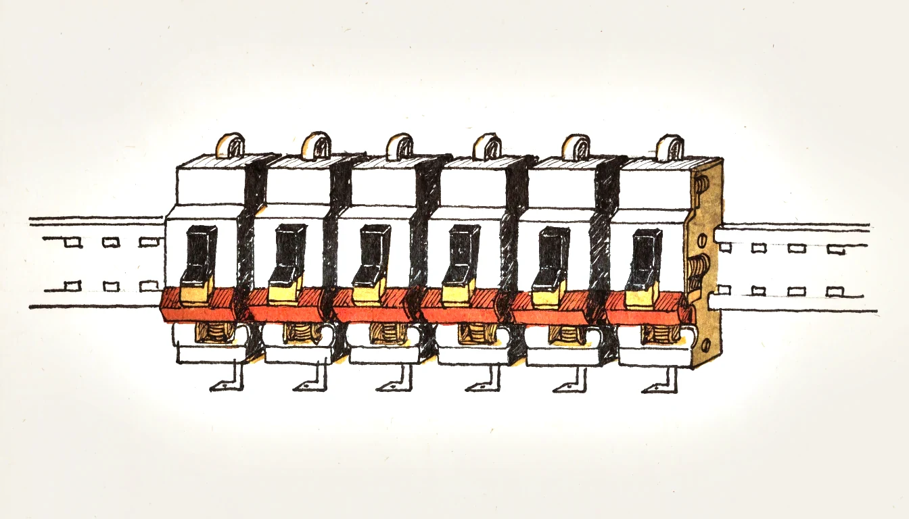
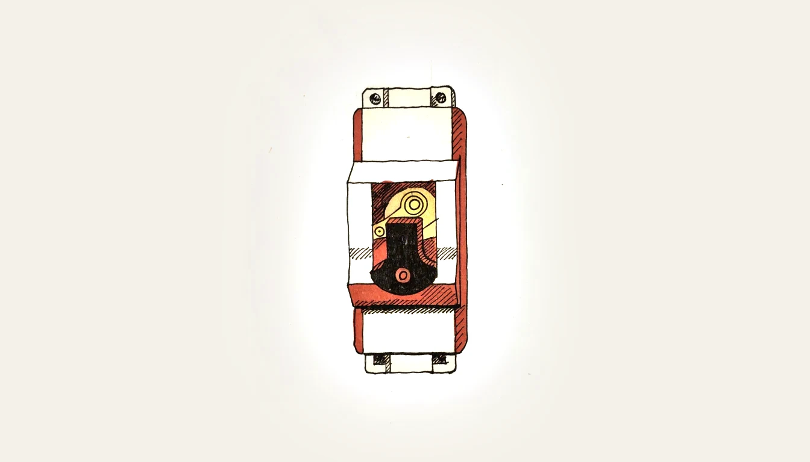
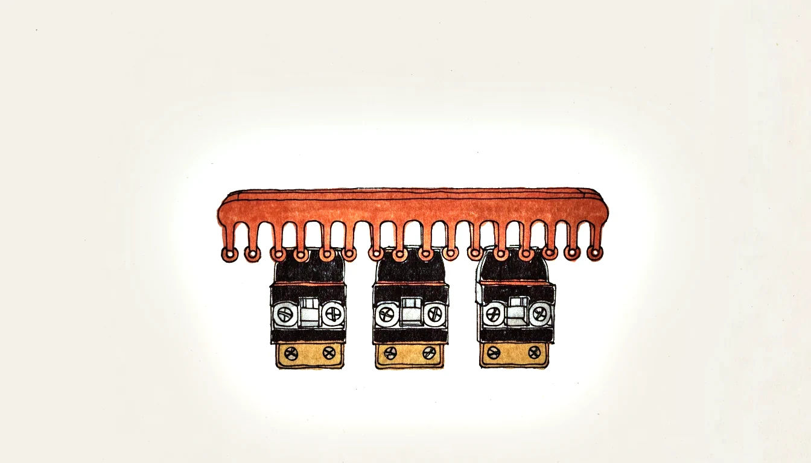

Aufbau · Modelle · Typ B / C / D · Zeichnung · Schaltvermögen Design · types · type B / C / D · drawing · breaking capacity
Der Leitungsschutzschalter — im Alltag «LS-Automat» oder einfach «Automat» — ersetzt die Schmelzsicherung. Er schützt die Leitung vor Überlast und Kurzschluss und lässt sich nach dem Auslösen wieder einschalten, statt ersetzt zu werden.
The miniature circuit breaker replaces the fuse. It protects the cable against overload and short circuit and can be reset after tripping instead of being replaced.
Dafür enthält er zwei völlig verschiedene Auslöser in einem Gehäuse: einen thermischen für die langsame Überlast und einen magnetischen für den blitzschnellen Kurzschluss.
To do this it contains two entirely different releases in one housing: a thermal one for slow overload and a magnetic one for the instantaneous short circuit.
Der LS schützt Leitungen vor Überstrom. Bei erfüllter Abschaltbedingung kann er auch den Fehlerschutz durch automatische Abschaltung übernehmen. Kleine gefährliche Körperströme erkennt er jedoch nicht zuverlässig; dafür dient unter anderem der zusätzliche Schutz durch einen geeigneten RCD. Motoren benötigen einen auf den Motor abgestimmten Schutz.
An MCB protects cables against overcurrent. With the required disconnection conditions met, it can also provide fault protection by automatic disconnection. It does not reliably detect small dangerous body currents; an appropriate RCD provides additional protection. Motors need protection matched to the motor.

Wie beim Motorschutzschalter gilt: Der Automat löst auch aus, wenn der Knebel in Stellung EIN festgehalten wird. Der Schutz lässt sich nicht durch Gegenhalten überbrücken.
As with the motor protection switch: the breaker trips even if the toggle is held in the ON position. The protection cannot be defeated by holding it.
Die folgenden B-, C- und D-Bereiche gelten für die magnetische Auslösung bei Wechselstrom nach EN 60898-1. Sie sind Toleranzbänder, keine einzelnen Schaltschwellen. Die thermischen Prüfgrenzen sind gleich; Umgebungstemperatur, Vorbelastung und Einbaubedingungen beeinflussen das Verhalten. Die Anwendungen sind Beispiele, keine Auswahlvorschrift.
The following B, C and D ranges describe magnetic tripping on AC under EN 60898-1. They are tolerance bands, not single thresholds. Thermal test limits are the same; ambient temperature, previous loading and installation conditions affect behaviour. Applications are examples, not selection rules.
| CharakteristikCharacteristic | Magnetische AuslösungMagnetic trip | AnwendungApplication | BegründungReason |
|---|---|---|---|
| B | 3 … 5 × In | Steckdosen, Beleuchtung, allgemeine Stromkreisesockets, lighting, general circuits | kleiner Einschaltstoss; niedrigstes magnetisches Auslösebandlow inrush; lowest magnetic trip band |
| C | 5 … 10 × In | Motoren, Transformatoren, LED- und FL-Gruppenmotors, transformers, groups of LED and fluorescent gear | deutlicher Einschaltstoss, darf nicht zur Fehlauslösung führennoticeable inrush that must not cause nuisance tripping |
| D | 10 … 20 × In | grosse Transformatoren, Schweissgeräte, Kondensatorenlarge transformers, welding sets, capacitors | sehr hoher, kurzer Stromstoss beim Einschaltenvery high, brief inrush at switch-on |
| PrüfstromTest current | VerhaltenBehaviour |
|---|---|
| 1,13 × In | kleiner Prüfstrom — darf innerhalb der Prüfzeit nicht auslösenconventional non-tripping current — must not trip within the test time |
| 1,45 × In | grosser Prüfstrom — muss innerhalb der Prüfzeit auslösenconventional tripping current — must trip within the test time |
Werte nach EN 60898; die Prüfzeit hängt vom Bemessungsstrom ab — im Datenblatt nachschlagen. Values to EN 60898; the test time depends on the rated current — look it up in the data sheet.
Ein B16 ist unter den festgelegten Referenzbedingungen für 16 A bemessen. Er schaltet nicht bereits beim kleinsten Überschreiten ab. Bei 1,45 × In muss er innerhalb der festgelegten Prüfzeit auslösen. Für reale Einbaubedingungen sind die Korrekturfaktoren des Herstellers zu beachten.
A B16 is rated for 16 A under specified reference conditions. It does not trip at the slightest exceedance. At 1.45 × In it must trip within the specified test time. Manufacturer correction factors apply to actual installation conditions.
| PolzahlPoles | BezeichnungDesignation | EinsatzUse |
|---|---|---|
| 1-polig | 1P | Einzelner Aussenleiter, Standard im Wohnbausingle line conductor, standard in housing |
| 1-polig + N | 1P+N | schaltet zusätzlich den Neutralleiter mitalso switches the neutral |
| 3-polig | 3P | Drehstromkreise ohne Neutralleiterthree-phase circuits without neutral |
| 3-polig + N | 3P+N | Drehstrom mit Neutralleiterthree-phase with neutral |
Mehrpolige Automaten mit gemeinsamer Auslösung öffnen bei der Auslösung alle zugehörigen Pole. Das verhindert ein einpoliges Abschalten durch diesen Automaten. Ein Phasenausfall an anderer Stelle wird dadurch jedoch nicht sicher erkannt; erforderlicher Motor- und Phasenausfallschutz ist gesondert vorzusehen.
Multipole breakers with common tripping open all associated poles when they trip. This prevents that breaker from disconnecting only one phase. It does not reliably detect phase loss elsewhere; required motor and phase-loss protection must be provided separately.
Das Bemessungsschaltvermögen gibt an, welchen Kurzschlussstrom der Automat sicher abschalten kann, ohne selbst zerstört zu werden. Es steht im Rechteck auf der Front.
The rated short-circuit capacity states which fault current the breaker can safely interrupt without destroying itself. It is printed in a rectangle on the front.
| WertValue | Typischer EinsatzortTypical location |
|---|---|
| 3000 A | weit von der Einspeisung entfernt, kleine Anlagenfar from the supply point, small installations |
| 6000 A | üblicher Wert im Wohnungsbaucommon value in housing |
| 10 000 A | nahe an der Einspeisung, Gewerbe und Industrieclose to the supply, commercial and industrial |
Das Bemessungsschaltvermögen muss den maximal zu erwartenden Kurzschlussstrom am Einbauort mindestens erreichen. Eine geringere Einzelgeräte-Bemessung ist nur mit nachgewiesener, vom Hersteller koordinierter Backup-Schutzeinrichtung zulässig. Der Einbauort allein ersetzt keine Berechnung oder Messung.
The rated breaking capacity must at least equal the maximum prospective short-circuit current at the installation point. A lower individual rating requires a verified manufacturer-coordinated backup protective device. Location alone is no substitute for calculation or measurement.

Die Abschaltzeit muss mit dem kleinsten zu erwartenden Fehlerstrom und der Gerätekennlinie nachgewiesen werden. Für eine schnelle magnetische Abschaltung zählt die obere Grenze des Toleranzbandes. Eine lange Leitung kann den Fehlerstrom begrenzen. Querschnitt und Charakteristik sind dann zu überprüfen. Ein RCD kann bei einem Fehler gegen Erde die Abschaltbedingung erfüllen, ersetzt aber weder Überlastschutz noch den Schutz bei einem L–N-Kurzschluss.
Verify the disconnection time using the minimum prospective fault current and the device curve. Fast magnetic disconnection requires the upper boundary of the tolerance band. Long cables may limit fault current, requiring a review of conductor size and curve. An RCD can meet the disconnection condition for an earth fault, but replaces neither overload protection nor protection against an L–N short circuit.
Einen ständig auslösenden Automaten durch einen grösseren ersetzen, ohne die Leitung zu prüfen. Die Leitung bleibt dieselbe — nur ihr Schutz ist dann weg. Zuerst die Ursache suchen: zu viele Verbraucher, defektes Gerät, Isolationsfehler oder ein zu klein dimensionierter Querschnitt.
Replacing a repeatedly tripping breaker with a bigger one without checking the cable. The cable stays the same — only its protection is gone. Find the cause first: too many loads, a faulty appliance, an insulation fault, or an undersized conductor.

Ein Bimetall für die Überlast, das stromabhängig verzögert auslöst, und einen Magnetauslöser für den Kurzschluss, der unverzögert abschaltet. Beide wirken auf dieselbe Auslöseschiene und damit auf ein gemeinsames Schaltschloss.
A bimetal for overload, tripping with an inverse time delay, and a magnetic release for short circuit, disconnecting instantaneously. Both act on the same tripping bar and therefore on one common mechanism.
Bei 1,45 × 16 A = 23,2 A muss die thermische Auslösung innerhalb der festgelegten Prüfzeit erfolgen; bei 1,13 × In darf sie innerhalb der zugehörigen Prüfzeit nicht erfolgen. Das magnetische Band liegt bei 48–80 A. Für den Nachweis der schnellen Abschaltung ist 80 A massgebend, nicht bereits 48 A; Prüfbedingungen und Kennlinie beachten.
At 1.45 × 16 A = 23.2 A, thermal tripping must occur within the specified test time; at 1.13 × In, it must not occur within the associated test time. The magnetic band is 48–80 A. Use 80 A, not 48 A, when verifying fast disconnection; observe the test conditions and curve.
Das lässt sich ohne Lastdaten nicht pauschal festlegen. Einschaltstrom und Impulsdauer mit der Kennlinie vergleichen, danach Leitungs- und Abschaltbedingungen prüfen. C oder D können geeignet sein, verlangen aber für die schnelle magnetische Auslösung höhere Fehlerströme. Auch B kann bei ausreichend kleinem Einschaltstrom passen.
This cannot be decided without load data. Compare inrush current and duration with the curve, then verify cable protection and disconnection conditions. C or D may be suitable but require higher fault currents for fast magnetic tripping. B can also be suitable if inrush is sufficiently low.
6000 bezeichnet 6000 A Bemessungsschaltvermögen nach der angegebenen Produktnorm. Es muss den maximalen Kurzschlussstrom am Einbauort mindestens erreichen, sofern keine nachgewiesene Backup-Kombination eingesetzt wird.
6000 denotes a rated breaking capacity of 6000 A under the stated product standard. It must at least equal the maximum prospective short-circuit current unless a verified backup combination is used.
Damit beim Auslösen alle zugehörigen Pole öffnen. Das gemeinsame Schaltschloss allein ist kein umfassender Phasenausfallschutz für einen Motor.
So that all associated poles open when the breaker trips. A common mechanism alone does not provide comprehensive motor phase-loss protection.
Ein FI-LS (RCBO) kombiniert Fehlerstrom- und Überstromschutz. Einzelne Stromkreise lassen sich damit getrennt schützen. Ob bei einem Fehler nur dieser Stromkreis abschaltet, hängt auch von der Selektivität zu vorgeschalteten Schutzorganen ab.
An RCBO combines residual-current and overcurrent protection. It allows individual circuit protection. Whether only that circuit disconnects also depends on selectivity with upstream protective devices.
Weil der Automat die Leitung schützt und die Leitung dieselbe bleibt. Ein grösserer Automat lässt einen Strom zu, den die Leitung thermisch nicht mehr verträgt — die Isolation altert, verkohlt und es entsteht Brandgefahr. Zuerst die Ursache der Auslösung beheben.
Because the breaker protects the cable and the cable stays the same. A larger breaker permits a current the cable can no longer withstand thermally — the insulation ages, chars and a fire risk arises. Eliminate the cause of tripping first.
Der Automat löst auch dann aus, wenn der Schaltknebel von Hand in Stellung EIN festgehalten wird. Der Schutz lässt sich durch Gegenhalten nicht überbrücken.
The breaker trips even if the toggle is held in the ON position by hand. The protection cannot be defeated by holding it.